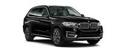

BMW X5 |
|  more images | BMW X5 — среднеразмерный кроссовер от немецкого автопроизводителя BMW. Автомобиль был представлен в 1999 году на автосалоне в Детройте. Буква «Х» означает, что автомобиль имеет полный привод, а цифра «5» — что базой послужила 5-я серия (BMW E39), однако X5 короче E39, но при этом выше и шире. Кузов Е53 напоминает BMW E46 Touring. Машина приспособлена для езды по всем типам дорожного покрытия, этим она обязана большому клиренсу и постоянному приводу на все колёса. |
BMW X5 |
| more images | BMW X5 — среднеразмерный кроссовер от немецкого автопроизводителя BMW. Автомобиль был представлен в 1999 году на автосалоне в Детройте. Буква «Х» означает, что автомобиль имеет полный привод, а цифра «5» — что базой послужила 5-я серия (BMW E39), однако X5 короче E39, но при этом выше и шире. Кузов Е53 напоминает BMW E46 Touring. Машина приспособлена для езды по всем типам дорожного покрытия, этим она обязана большому клиренсу и постоянному приводу на все колёса. |